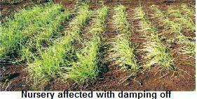

India is the second largest onion growing country in the world. Indian onions are famous for their pungency and are available round the year. Indian onions has two crop cycles, first harvesting starts in November to January and the second harvesting from January to May.
The onion is a hardy cool-season biennial but usually grown as annual crop. The onion has narrow, hollow leaves and a base which enlarges to form a bulb. The bulb can be white, yellow, or red and require 80 to 150 days to reach harvest.
The major Onion producing states are Maharashtra, Madhya Pradesh, Karnataka, Gujarat, Rajasthan, Bihar, Andhra Pradesh, Haryana, West Bengal, Uttar Pradesh, Chhattisgarh, Odisha, Tamil Nadu, Jharkhand and Telangana in the country.
climate
Onion is a temperate crop but can be grown under a wide range of climatic conditions such as temperate, tropical and subtropical climate. The best performance can be obtained in a mild weather without the extremes of cold and heat and excessive rainfall. However, onion plant is hardy and in the young stage can withstand freezing temperature also. In India, short-day onion is grown in the plains and requires 10-12 hours day length. The long-day onion is grown in hills requiring 13-14 hours day length. For vegetative growth, lower temperature combined with short photoperiod is required whereas relatively higher temperature along with longer photoperiod is required for bulb development and maturity. The optimum temperature for vegetative phase and bulb development is 13-24˚C and 16-25˚C, respectively. It requires about 70% relative humidity for good growth. It can grow well in places where the average annual rainfall is 650-750 mm with good distribution during the monsoon period. Areas with low (< 650 mm) or heavy rainfall (>750 mm) are not particularly suitable for rain-fed crop.
soil
Onion can be grown in all types of soils such as sandy loam, clay loam, silt loam and heavy soils. However, the best soil for successful onion cultivation is deep, friable loam and alluvial soils with good drainage, moisture holding capacity and sufficient organic matter. In heavy soils, the bulbs produced may be deformed. Onion crop can be grown successfully on heavy soil with application of organic manure prior to planting and preparation of the field for onion cultivation should be very good. The optimum pH range, regardless of soil type, is 6.0 - 7.5, but onion can also be grown in mild alkaline soils. Onion crop is more sensitive to highly acidic, alkali and saline soils and water logging condition. Onions do not thrive in soils having pH below 6.0 because of trace element deficiencies, or occasionally, Al or Mn toxicity. The threshold electrical conductivity of a saturation extract (ECe) for onion crop is 4.0 dS/m. When the ECe level exceeds this, crop yield starts declining.
Onion Diseases
Damping-off
5
The disease is more prevalent during kharif season and causes about 60-75% damage. High soil,
moisture and moderate temperature along with high humidity especially in the rainy season leads to
the development of the disease. Two types of symptoms are observedPre-emergence damping-off: The pre-emergence damping off results in seed and seedling rot
before these emerge out of the soil.
Post-emergence damping-off: The pathogen attacks the collar region of seedlings on the surface of
soil. The collar portion rots and ultimately the seedlings collapse and die.
Control: Healthy seed should be selected for sowing. The seed should be treated with Thiram @ 2g/kg
of seed before sowing. Continuous raising of nursery in the same plot should be avoided. The topsoil of
2
nursery should be treated with Thiram @ 5g/m area of the soil and nursery should be drenched with
the same chemical @ 2g/litre of water at fortnightly interval. Soil solarization by spreading 250 gauge
polythene sheet over the bed for 30 days before sowing and application of bio-control agent
Trichoderma viride in soil @ 1.2kg/ha is also found effective to control damping-off to considerable
extent.
It is an important disease prevalent in all the onion growing areas. Hot and humid climate with
temperature ranging from 21-30°C and relative humidity (80-90%)
favour the development of the disease. It is more common in kharif
season. The symptoms occur on leaves and flower stalks as small,
sunken, whitish flecks with purple coloured centres. The lesions may
girdle leaves/stalk and cause their drooping. The infected plants fail to
develop bulbs .The intensity of disease varies from season to season.
Control: Use of healthy seeds for planting and crop rotation of 2-3 years
with non-related crops checks the disease. Spraying Mancozeb (0.25%) or Chlorothalonil (0.2%) or
Iprodione (0.25%) after one month from transplanting at fortnightly interval reduces the disease
incidence. The sticker triton/sandovit should also be mixed in spray solution.
The disease is common in onions stored in hot climates where the
0
temperature ranges between 30- 45 C. It is characterized by the black
powdery mass of spores that appear on the exterior of the scales. The black
spore masses are also seen on inner scales. It reduces the market value of
the bulbs.
Control: For effective control of die disease, left for drying in the field for two
days. These bulbs should be further dried in shade for 10-15 days before storage. Care should be
taken to avoid injury to the bulbs during post harvest handling. The crops should be sprayed with
Carbendazim (0.2%) 10-15 days before harvesting.
It is very serious disease of onions in storage. The infection occurs through the
wounds. The rot begins at the neck of the bulbs which later gives foul smell through
the neck when squeezed.
Control: Proper curing and rapid drying of the bulbs after harvesting is essential for
controlling the disease. Affected bulbs should be discarded before storage. If rains
occur during maturity, spraying of Streptocycline (0.02%) is recommended.